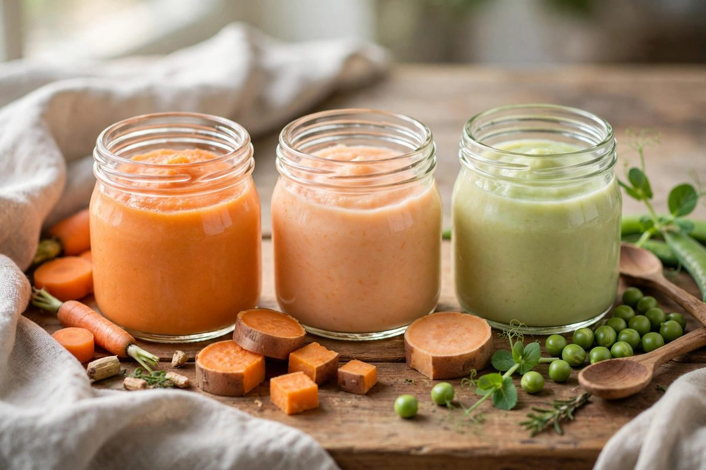

Home » Guides
Homemade Purees

Homemade purees are one of the simplest ways to start your baby on solids. They cost far less than jars, they let you control exactly what goes in, and they take only minutes to prepare in a batch. You do not need special equipment: a steamer basket, a blender or a fork, and a few ice cube trays are enough to get started. This guide covers choosing ingredients, cooking and blending them to the right texture, combining flavours as your baby grows, and storing purees safely so nothing goes to waste.
Choosing ingredients
Start with single vegetables and fruits that cook soft and taste mild: carrot, sweet potato, parsnip, courgette, apple, pear, and banana. Root vegetables and squash are usually well accepted because they are naturally sweet. As your baby gets used to eating, add lentils, chickpeas, and well-cooked meats for iron and protein, and soft fruits like mango, peach, and avocado for variety. Buy fresh, ripe produce and wash it well. Frozen vegetables are just as nutritious as fresh ones and are handy for small batches, so keep a bag of peas and a bag of broccoli in the freezer.
Cooking and blending
Steaming is the best method because it keeps more vitamins in the food than boiling does. Cut vegetables into even pieces, steam until they are very soft when pressed with a fork, then blend with a little of the cooking water, breast milk, or formula until you reach a smooth, runny texture. For a first puree, it should be thin enough to drip off the spoon. As your baby gets older, use less liquid so the texture gets thicker. A fork is enough for soft foods like banana and avocado; a hand blender is ideal for small batches of firmer vegetables.
Flavour combinations that work
Once your baby has tried foods on their own, start combining them. Apple and carrot, sweet potato and lentil, pear and parsnip, and broccoli and potato are all gentle, tasty pairs. Try adding a pinch of cinnamon to apple or a little cumin to carrot and lentil once your baby is eating confidently. Avoid adding salt, sugar, honey, or stock cubes. Combinations are also a good way to use up leftover vegetables, and they teach your baby that meals can contain more than one flavour at a time.
Making a batch and storing it
Cooking in batches saves time. Make two or three different purees at once, let them cool, then spoon them into ice cube trays and freeze. Each cube is roughly one ounce, so you can defrost exactly as much as you need. Label each tray with the food and the date. Use frozen purees within a month, defrost in the fridge overnight or in a bowl of warm water, and always reheat until steaming hot, then cool before serving. Never reheat a puree more than once, and throw away any puree your baby has eaten from.
Planning a puree week
A little planning makes homemade purees easy. Choose three vegetables and two fruits for the week, and cook them in one session on Sunday. Steam the vegetables in batches, blend each one separately, and freeze the purees in ice cube trays. Label each tray with the food and the date, and keep a simple list on the fridge of what is in the freezer. During the week, defrost one or two cubes per meal and mix them to create new combinations. This routine takes about an hour a week and means you always have a healthy meal ready without cooking from scratch every day.
Frequently Asked Questions
How long do homemade purees keep in the fridge?
About 48 hours in a covered container. After that, throw them away. For longer storage, freeze in portions and use within a month.
Do I need a special baby food maker?
No. A steamer basket and a hand blender or fork do the job well. A food maker is convenient but not necessary.
Can I use frozen vegetables for purees?
Yes. Frozen peas, broccoli, and carrots are nutritious, cheap, and quick to steam, and they reduce waste because you use only what you need.
Important: every baby is different. Always follow your pediatrician's advice on when to start solids, which foods to offer, and how to introduce allergens. The guidance on this site is general information, not medical advice.